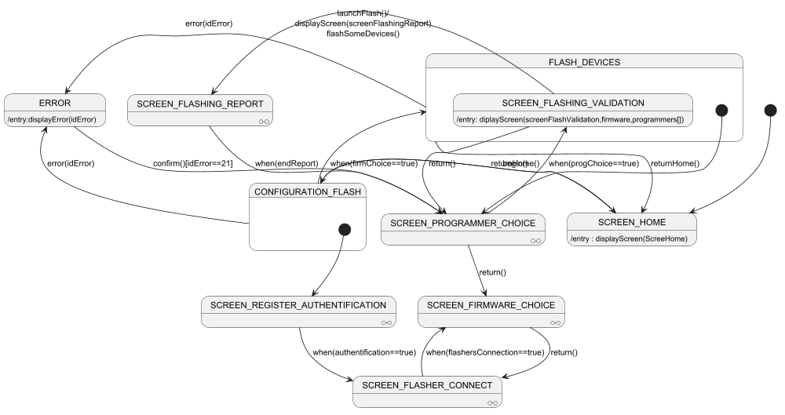

@startuml
set separator none
scale 1000 width
state SCREEN_REGISTER_AUTHENTIFICATION <<O-O>>
state SCREEN_FIRMWARE_CHOICE <<O-O>>
state SCREEN_FLASHER_CONNECT <<O-O>>
state SCREEN_PROGRAMMER_CHOICE <<O-O>>
state SCREEN_FLASHING_REPORT <<O-O>>
[*]-down->SCREEN_HOME
SCREEN_HOME : /entry : displayScreen(ScreeHome)
SCREEN_HOME--> CONFIGURATION_FLASH : begin()
CONFIGURATION_FLASH -left->SCREEN_HOME : returnHome()
FLASH_DEVICES-->SCREEN_HOME : returnHome()
state CONFIGURATION_FLASH {
[*]-->SCREEN_REGISTER_AUTHENTIFICATION
SCREEN_REGISTER_AUTHENTIFICATION-down->SCREEN_FLASHER_CONNECT : when(authentification==true)
SCREEN_FLASHER_CONNECT-down->SCREEN_FIRMWARE_CHOICE : when(flashersConnection==true)
SCREEN_FIRMWARE_CHOICE--> SCREEN_FLASHER_CONNECT : return()
}
state FLASH_DEVICES{
[*]-down->SCREEN_PROGRAMMER_CHOICE
SCREEN_PROGRAMMER_CHOICE-right->SCREEN_FLASHING_VALIDATION : when(progChoice==true)
SCREEN_FLASHING_VALIDATION-down->SCREEN_FLASHING_REPORT : launchFlash()/\ndisplayScreen(screenFlashingReport)\nflashSomeDevices()
SCREEN_FLASHING_REPORT-->SCREEN_PROGRAMMER_CHOICE : when(endReport)
SCREEN_FLASHING_VALIDATION-->SCREEN_PROGRAMMER_CHOICE : return()
SCREEN_FLASHING_VALIDATION: /entry: diplayScreen(screenFlashValidation,firmware,programmers[])
}
SCREEN_PROGRAMMER_CHOICE-right->SCREEN_FIRMWARE_CHOICE : return()
CONFIGURATION_FLASH-up-> FLASH_DEVICES : when(firmChoice==true)
CONFIGURATION_FLASH -down->ERROR : error(idError)
FLASH_DEVICES-up->ERROR : error(idError)
ERROR : /entry:displayError(idError)
ERROR--> SCREEN_PROGRAMMER_CHOICE : confirm()[idError==21]
@enduml